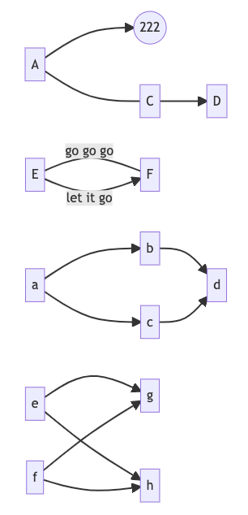
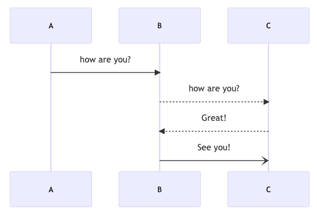

Mermaid
文本语法（语言）来描述文档图形 （流程图、 时序图、甘特图)）的工具。
比如下面的图形

用代码实现起来如下，
~~~mermaid
flowchart LR
A --> B((222))
A --- C
C --> D
%% 我是备注
E-- go go go ---F
E-->|let it go|F
a --> b & c --> d
e & f --> g & h
~~~
是不是超级简单，跟画图比起来，是不是要快很多。就算不熟悉语法，也可以照着例子写。所以只要了解相关的实例即可，需要用时再搬过来。
再看看时序图，如果用画图软件需要多长时间画完，估计对齐就需要点时间

但是用 mermaid 语言却可以很快实现，实现代码如下，只需要简单5行即可
~~~mermaid
sequenceDiagram
A ->> B: how are you?
B -->> C: how are you?
C -->> B: Great!
B -) C: See you!
~~~
饼状图
pie title Pie Chart
"A" : 386
"B" : 567
"C" : 700
"D" : 365
"E" : 15
git节点图
有些软件可能无法显示，VSCode 测试验证是可以的
gitGraph
commit id: "ZERO"
branch develop
commit id:"A"
checkout main
commit id:"ONE"
checkout develop
commit id:"B"
checkout main
commit id:"TWO"
cherry-pick id:"A"
commit id:"THREE"
checkout develop
commit id:"C"
时序图
sequenceDiagram
Alice ->> John: Hello John, how are you?
John -->> Alice: Great!
Alice -x John: See you later!
%% 人物顺序反过来
participant John1
participant Alice1
Alice1 ->> John1: Hello John, how are you?
John1 -->> Alice1: Great!
%% 别名
%% participant A as Alice
%% participant J as John
sequenceDiagram
Alice->>John: 111, how are you?
activate John
John-->>Alice: 111 Great!
deactivate John
#
Alice->>+John: 222, how are you?
Alice->>+John: 222, can you hear me?
John-->>-Alice: Hi Alice, I can hear you!
John-->>-Alice: I feel great!
#
Alice->>+John: 333, how are you?
John-->>-Alice: 333 Great!
sequenceDiagram
participant John
participant Alice
Note left of John: Text in note
John -->> Alice: 你好啊
Note over Alice,John: A typical interaction
Alice->>John: Hello John, how are you?
loop Every minute
John-->Alice: Great!
end
flowchart LR
A[Hard edge] -->|Link text| B(Round edge)
B --> C{Decision}
C -->|One| D[Result one]
C -->|Two| E[Result two]
代码说明
- 表示实线
-- 表示虚线
> 表示无箭头
>> 表示有箭头
x 表示末尾有一个x
图形形状
flowchart TB
A1([hello])
A2(hello)
A3[hello]
A4((hello))
A5{hello}
类图
classDiagram
class Animal
Animal <|--Dog
Animal <|--Fish
Animal <|--Zebra
Animal: age Int
Animal: gender String
Animal: +init()
Animal: +isMammal()
Animal: +mate()
class Dog {
breakColor: String
+eat()
}
class Fish {
- sizeInFeet: Int
-canEat()
}
class Zebra {
+is_wild: Bool
+run()
}
classDiagram
classA <|-- classB
classC *-- classD
classE o-- classF
classG <-- classH
classI -- classJ
classK <.. classL
classM <|.. classN
classO .. classP
classDiagram
classA --|> classB : 继承
classC --* classD : 组成
classE --o classF : 集合
classG --> classH : 关联
classI -- classJ : 实线连接
classK ..> classL : 依赖
classM ..|> classN : 实现
classO .. classP : 虚线连接